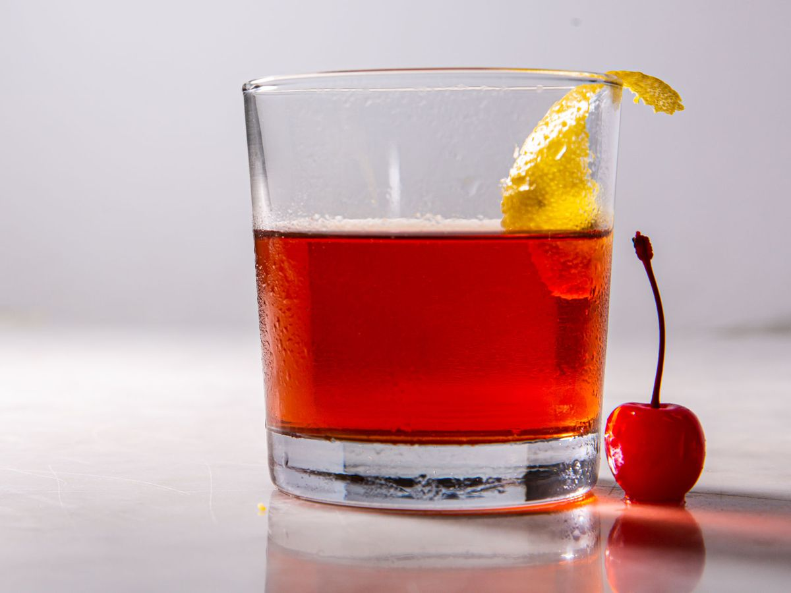

A Taste Of The Big Easy
Ingrediants
- 1 sugar cube
- 3 dashes Peychaud's Bitters
- 2 oz rye whiskey, to taste
- .25 oz absinthe, or anise liqueur
- Lemon twist, for garnish
Directions
-
Chill an old-fashioned glass by filling it with ice. Let it sit while
you prepare the rest of the drink.
-
In a mixing glass, soak the sugar cube with the bitters and muddle to
crush the cube.
- Add the rye whiskey and stir.
-
Discard the ice in the chilled glass. Rinse it with absinthe: Pour a
small amount into the glass, swirl it around, then discard the liquid.
- Pour the whiskey mixture into the absinthe-rinsed glass.
-
Gently squeeze the lemon twist over the drink to release its essence.
Traditionalists typically discard it and rarely drop it into the glass;
lay it on the rim as a garnish if you like. Serve and enjoy.